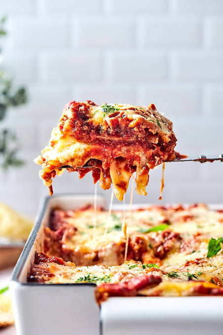

Lasagna
Home

Description
This lasagna is a cheesy dish perfect for group gatherings, a cozy night, or a family dinner
Ingredients
- Lasagna Noodles
- Olive Oil
- Italian sausage & Ground Beef
- Marinara Sauce
- Ricotta Cheese
- Eggs
- Eggs
- Heavy Cream
- Fresh Lemon Juice
- Mozzarella Cheese
- Parmesan cheese
- Fresh Basil or Parsley
Steps
- Preheat the oven. Bring a large pot of water to a boil and generously season with kosher salt. Cook the lasagna noodles until al dente, according to package instructions.
- Drain and rinse with cold water. Separate any noodles that are stuck together. Drizzle the noodles with a little olive oil.
- In a large pot, heat the olive oil over medium-high heat. Add the sausage and ground beef, season with salt and pepper. Cook, stirring occasionally, until browned, about 8 minutes. Drain excess grease.
- Add the marinara sauce to the cooked sausage and meat and stir to combine.
- In a large bowl, combine the ricotta cheese and eggs. Add the heavy cream and lemon juice and stir until smooth. Stir in 1 cup shredded mozzarella cheese and ¾ cup Parmesan cheese. Season with salt and pepper.
- Now, it’s time to layer the lasagna. Spread 1 ½ cups of sauce on the bottom of a 9×13 baking dish that is at least 2 1/2-inches deep. Top with a layer of noodles, try not to overlap them.
- Top with 2 cups of sauce and ½ cup shredded mozzarella cheese. Top with another layer of noodles and spread ricotta cheese mixture evenly over the noodles.
- Add another layer of noodles, 2 cups of sauce, and ½ cup of shredded mozzarella cheese.
- Top with another layer of noodles and finish with remaining sauce, mozzarella cheese, and Parmesan cheese. The pan will be very full.
- Tent the lasagna with foil and secure tightly all around the edges. Place lasagna pan on a baking sheet and bake for 40 minutes. Carefully remove foil and bake an additional 15 to 20 minutes or until hot and bubbly.
- Remove from oven and let the lasagna sit for 15 minutes before serving. Garnish with fresh basil or parsley, if desired.